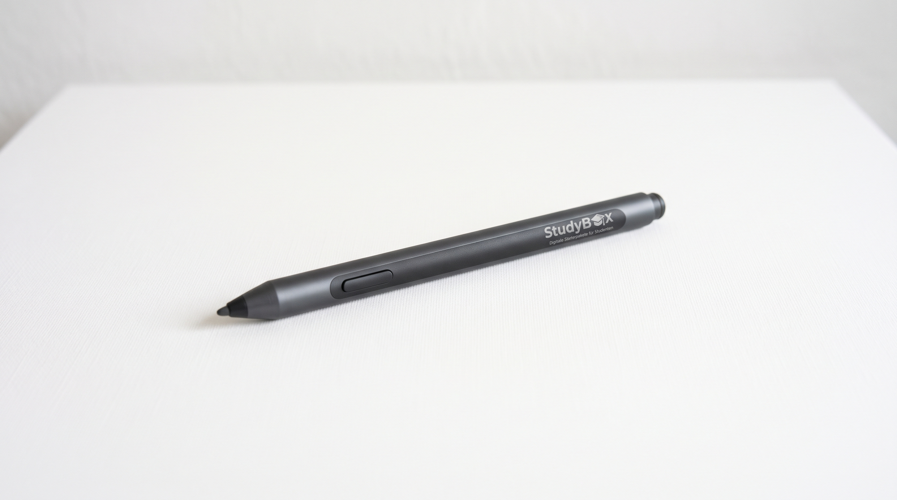

Das Technik Bundle wurde speziell für Studierende technischer
Studiengänge entwickelt. Es unterstützt dich bei Konstruktionen,
technischen Zeichnungen, CAD-Anwendungen, Simulationen,
Projektarbeiten und der Dokumentation deiner Studienprojekte.
Bundlepreis: 1.299,99 €
Notebook
Das Notebook bildet die zentrale Arbeitsplattform des Bundles.
Es eignet sich für CAD-Software, Simulationen,
technische Berechnungen sowie Projekt- und Konstruktionsarbeiten.
Ideal für technische Software und CAD-Anwendungen
Leistungsstarke Hardware für Simulationen
Mobiles Arbeiten an Hochschule und Unternehmen
Zuverlässige Unterstützung bei Projekten und Laborarbeiten
Monitor
Der Monitor bietet eine große Arbeitsfläche für technische
Zeichnungen, Konstruktionspläne und Simulationen. Dadurch
lassen sich komplexe Projekte deutlich übersichtlicher bearbeiten.
Mehr Platz für technische Anwendungen
Ideal für CAD-Programme
Paralleles Arbeiten mit mehreren Fenstern
Ergonomisches Arbeiten am Schreibtisch
Tablet
Das Tablet eignet sich hervorragend für Vorlesungsmitschriften,
technische Skizzen, Notizen und die digitale Verwaltung von
Projektunterlagen.
Digitale Skripte immer dabei
Perfekt für Vorlesungen
Ideal für Projektarbeiten
Mobiles Lernen unterwegs
Tablet-Stift

Mit dem Eingabestift können technische Skizzen,
Schaltpläne, Berechnungen und Konstruktionsentwürfe
direkt auf dem Tablet erstellt werden.
Ideal für technische Zeichnungen
Perfekt für Skizzen und Konstruktionen
Präzise Eingabe auf dem Tablet
Natürliches Schreibgefühl
Kabellose Tastatur
Die kabellose Tastatur unterstützt komfortables Arbeiten bei
technischen Dokumentationen, Projektberichten und längeren
Berechnungen.
Ideal für längere Arbeitsphasen
Angenehmes Tippgefühl
Kabellose Verbindung
Effizientes Arbeiten im Homeoffice
Kabellose Maus
Die ergonomische Maus ermöglicht präzise Navigation in
CAD-Anwendungen, Simulationssoftware und technischen
Planungswerkzeugen.
Präzise Steuerung
Ideal für technische Anwendungen
Ergonomisches Design
Komfortables Arbeiten über viele Stunden
Dockingstation
Die Dockingstation erweitert das Notebook um zusätzliche
Anschlüsse für Monitore, Eingabegeräte und weitere Hardware.
So entsteht ein professioneller Arbeitsplatz für technische
Projekte.
Anschluss mehrerer Geräte gleichzeitig
Ideal für Monitore und Peripherie
Schneller Wechsel zwischen mobilen und stationären Arbeitsplätzen
Perfektes Homeoffice-Setup
Externe Festplatte
Die externe Festplatte bietet zusätzlichen Speicherplatz für
Konstruktionspläne, CAD-Dateien, Simulationen, technische
Dokumentationen und Projektarbeiten.
Sicheres Backup technischer Projekte
Zusätzlicher Speicherplatz für CAD-Dateien
Ideal für Simulationen und Dokumentationen
Schnelle Datenübertragung über USB-C
Perfekt für Studium und Praxisphase
Laptoptasche
Die gepolsterte Laptoptasche schützt das Notebook und weiteres
Zubehör beim täglichen Transport zwischen Hochschule,
Laboren, Werkstätten und Praxisunternehmen.
Optimaler Schutz für technische Geräte
Robustes Material
Leichter Transport zwischen Theorie- und Praxisphase
Ideal für den Studienalltag
Warum dieses Bundle?
Technische Studiengänge stellen besondere Anforderungen an die
Ausstattung. CAD-Programme, technische Zeichnungen,
Simulationssoftware und umfangreiche Projektarbeiten benötigen
eine leistungsfähige und gut abgestimmte Arbeitsumgebung.
Das Technik Bundle kombiniert Mobilität, Produktivität und
Komfort in einem Komplettpaket für Studium, Praxisphase und
Homeoffice.